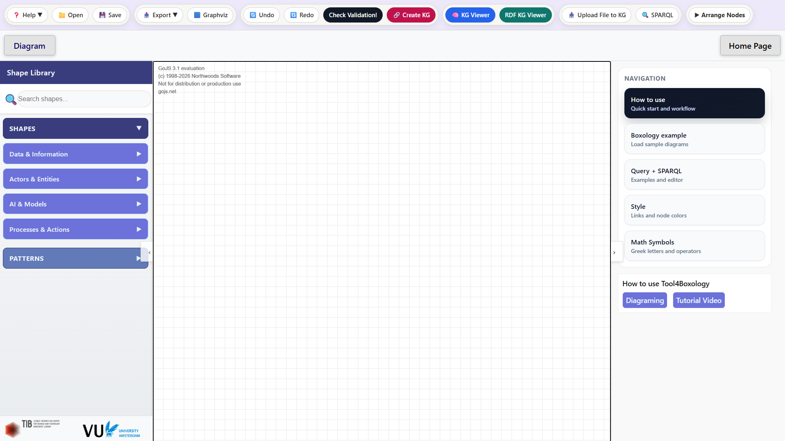
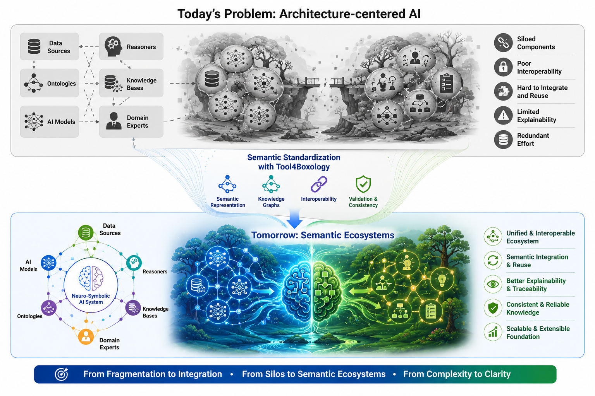
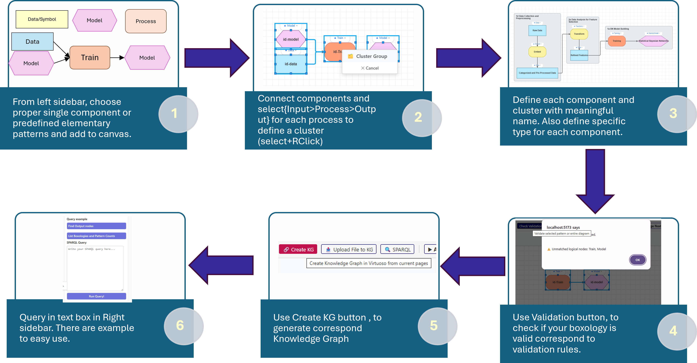
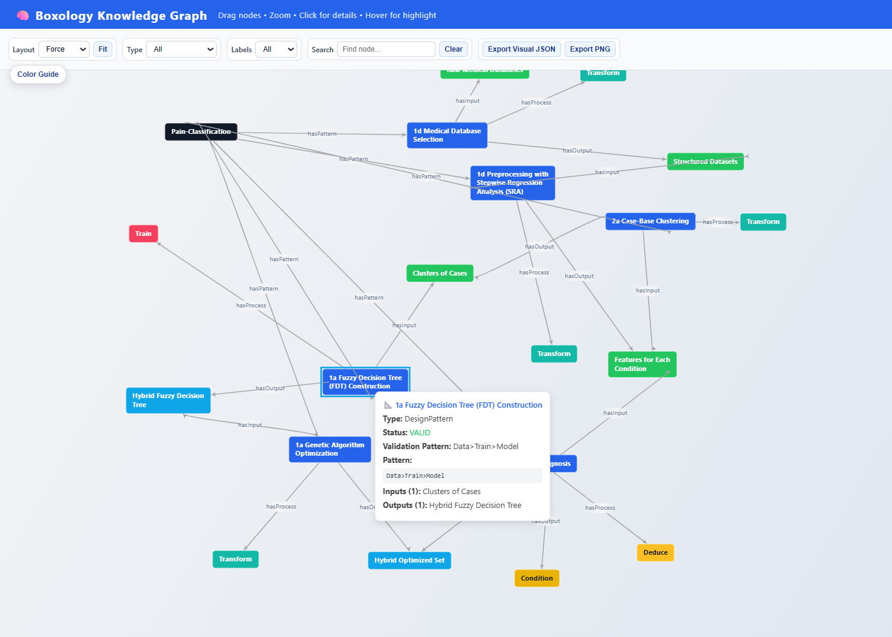

A
For scientists
Describe NeSy workflows in a shared notation.
A visual editor for designing, validating, and querying Boxology diagrams for NeSy systems.
draw.io-inspired interaction. GoJS-powered canvas. Boxology-specific validation.

Tool4Boxology adds Boxology semantics to diagramming, so a drawing can be validated and reused as graph data.
Describe NeSy workflows in a shared notation.
Export checked designs as JSON, RDF, DOT, and documentation.

Draw the system, validate the patterns, create the knowledge graph, then query it.
Use typed components and predefined patterns.
Wire components into named design patterns.
Detect invalid Boxology combinations early.
Generate RDF and inspect it visually or with SPARQL.

Data, symbols, actors, processes, models, and grouped patterns.
Check whether each grouped pattern is valid.
Generate graph data for querying, visualization, and reuse.
An illustrative collaboration around the Tumor Diagnosis example. The domain expert brings the question, the engineer brings the method, and Tool4Boxology gives them a shared, checkable language in between — instead of a whiteboard photo and a black-box model.
Wants diagnosis support she can defend to a tumor board — an answer she can trace back to the data and the reasoning that produced it.
Can build the neuro-symbolic pipeline, but first needs the clinical workflow captured precisely enough to validate, reuse, and document.
Dr. Kaya“I don’t just want a model that outputs ‘tumor.’ I need to show why — which scans, which labels, which step produced the diagnosis.”
Weber“Then let’s not start from code. We draw the system first and agree on its shape before I build anything.”
They open the editor and place typed Boxology components — data, symbols, models, the expert actor — instead of generic boxes.
Dr. Kaya“In practice it’s three stages: an expert labels the scan regions, we train on those labels plus preprocessed scans, then the trained model reads a new scan.”
Weber“That maps cleanly onto Boxology. Each stage becomes a named input–process–output pattern: Labeling, Training, Detection.”
They cluster the components into three grouped patterns, each named by its epistemic role — Engineer, Train, Deduce.
Weber“Before I trust the drawing, I run Check Validation — and it caught one illegal connection I’d wired by hand.”
Dr. Kaya“So it won’t let a plausible-looking flowchart pass as a real system?”
Weber“Exactly. One fix, and all three patterns validate against legal Boxology combinations.”
Validation compares each grouped pattern with the legal typed combinations and reports its status inline — catching mistakes before any code is written.
Dr. Kaya“Which step actually produced the label the model learned from?”
Weber“Now that it’s valid, the tool turns the diagram into a knowledge graph — so I can ask that exact question.”
They generate the KG and query it. “Which pattern produced Label for Segments?” returns Labeling — provenance the clinician can cite.
Dr. Kaya“Next I want to bring in genomic markers alongside the scans.”
Weber“We don’t redraw from scratch. We add a data source and a new pattern, revalidate, and the graph grows with the idea.”
The validated design becomes a reusable base: new inputs and patterns extend the same system and stay checkable end to end.
In an afternoon, a conversation became a validated, queryable design. The clinician can trace any diagnosis to the step and data behind it; the engineer has a specification to build, reuse, and extend — not a whiteboard photo. The same loop applies to any neuro-symbolic architecture.
A short walkthrough of drawing, validating, generating, and querying one NeSy system.
See how diagrams become validated graph data and SPARQL results.
Click a pattern to see its type, status, inputs, and outputs.

Tool4Boxology is grounded in Boxology design patterns and evaluated on neuro-symbolic systems from several domains.
Johannes E. Bendler, Yashrajsinh Chudasama, Mahsa Forghani, Enrique Iglesias, Disha Purohit, Jacquiline Roney, Annette ten Teije, Frank van Harmelen, and Maria-Esther Vidal. ESWC 2026, Springer-Verlag, pp. 191-211.
Please cite the ESWC 2026 paper if Tool4Boxology helps your research.
@inproceedings{10.1007/978-3-032-25159-6_11,
author = {Bendler, Johannes E. and Chudasama, Yashrajsinh and Forghani, Mahsa and Iglesias, Enrique and Purohit, Disha and Roney, Jacquiline and ten Teije, Annette and van Harmelen, Frank and Vidal, Maria-Esther},
title = {Tool4Boxology: A Semantic Toolbox for Constructing and Analysing Neuro-Symbolic Architectures},
booktitle = {The Semantic Web: 23rd European Semantic Web Conference, ESWC 2026},
year = {2026},
publisher = {Springer-Verlag},
pages = {191--211},
doi = {10.1007/978-3-032-25159-6_11}
}With additional contributions from Jacquiline Roney, Vrije Universiteit Amsterdam.
The online editor is the fastest entry point. The GitHub repository includes the React/GoJS interface, backend, KG generation code, Docker setup, and Draw.io plugin resources.